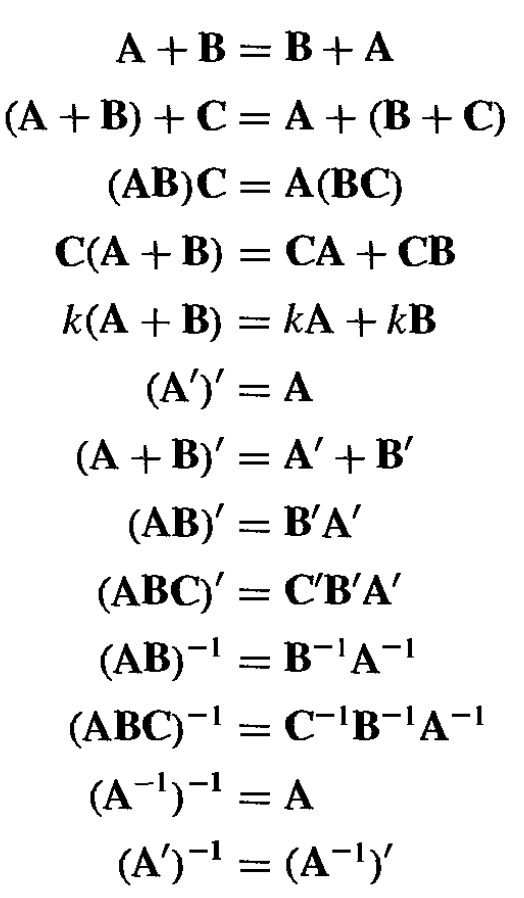
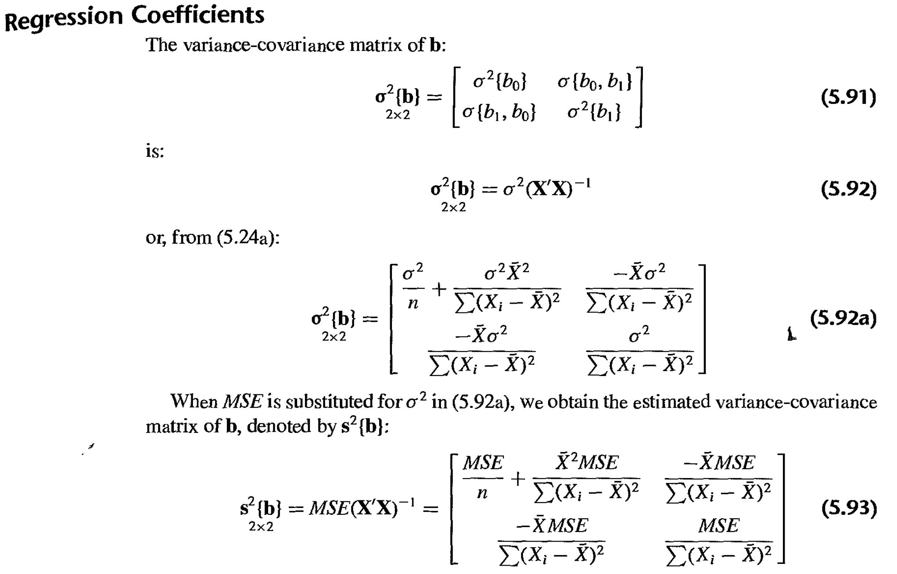
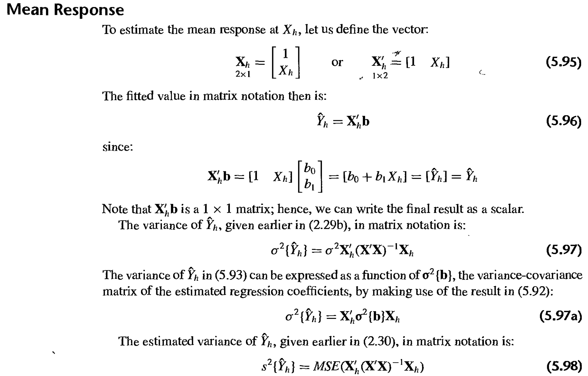
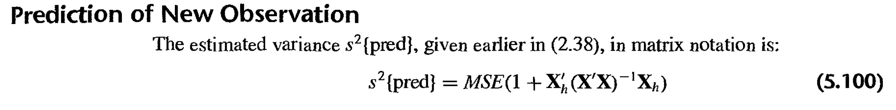

4.1 Matrix algebra

4.2 Regression matrices
4.3 SLR in matrix form
(Assuming matrix knowledge (or at least can be found elsewhere))
** Nice site showing r examples of most of the following: important-matrices-in-regression
4.3.1 Model statement
\(Y_i = \beta_0 + \beta_1 X_i + \epsilon_i, \hspace{10pt} \text{where} \hspace{10pt} \epsilon_i \overset{iid}\sim \text{Normal}\,(0,\sigma^2)\)
\[\Longrightarrow \hspace{20pt} \underset{n \times 1}{\boldsymbol{Y}} = \underset{n \times 2}{\boldsymbol{X}} \, \underset{2 \times 1}{\boldsymbol{\beta}} + \underset{n \times 1}{\boldsymbol{\epsilon}} \hspace{10pt} \text{and} \hspace{10pt} \underset{n \times 1}{\boldsymbol{E(Y)}} = \underset{n \times 1}{\boldsymbol{X\beta}} \tag{4.1}\]
because / where \(\hspace{10pt} \underset{n \times 1}{\boldsymbol{E(\epsilon)}} = \underset{n \times 1}{\boldsymbol{0}} \hspace{10pt} \text{and} \hspace{10pt} \underset{n \times n}{\boldsymbol{\sigma^2(\epsilon)}} = \underset{n \times n}{\boldsymbol{\sigma^2 I}}\)
4.3.2 Least squares estimation of regression parameters
The normal equations \[ \begin{align*} \hat{\beta}_0 + \hat{\beta}_1 \sum X_i &= \sum Y_i \\ \hat{\beta}_0 \sum X_i + \hat{\beta}_1 \sum X_i^2 &= \sum X_i Y_i \end{align*} \]
in matrix terms are
\(\underset{2 \times 2}{\boldsymbol{X'X}} \, \underset{2 \times 1}{\boldsymbol{\hat{\beta}}} = \underset{2 \times 1}{\boldsymbol{X'Y}}\)
where \(\hspace{10pt} \underset{1 \times 2}{\boldsymbol{\hat{\beta'}}} = [\hat{\beta}_1, \hat{\beta}_2] \hspace{10pt}\) is the vector of least squares regression coefficients.
4.3.3 Estimated regression coefficients
Simply use some matrix algebra:
\((\underset{2 \times 2}{\boldsymbol{X'X}})^{-1} \underset{2 \times 2}{\boldsymbol{X'X}} \underset{2 \times 1}{\boldsymbol{\hat{\beta}}} = (\underset{2 \times 2}{\boldsymbol{X'X}})^{-1}\underset{2 \times 1}{\boldsymbol{X'Y}}\)
\(\Longrightarrow\) \(\underset{2 \times 1}{\boldsymbol{\hat{\beta}}} = (\underset{2 \times 2}{\boldsymbol{X'X}})^{-1}\underset{2 \times 1}{\boldsymbol{X'Y}}\)
4.3.4 Fitted values
The vector of the fitted values \(\hat{Y}_i\) is \(\underset{1 \times n}{\boldsymbol{Y'}} = [\hat{Y}_1, \ldots, \hat{Y}_n]\).
In matrix notation, we have the following which can also be expressed using thehat matrix:
\[ \begin{align*} \underset{n \times 1}{\boldsymbol{Y}} &= \underset{n \times 2}{\boldsymbol{X}} \, \underset{2 \times 1}{\boldsymbol{\hat{\beta}}} \\ &= \underset{n \times 2}{\boldsymbol{X}} \, (\underset{2 \times 2}{\boldsymbol{X'X}})^{-1}\underset{2 \times 1}{\boldsymbol{X'Y}}\\ &= \underset{n \times n}{\boldsymbol{H}} \, \underset{n \times 1}{\boldsymbol{Y}} \end{align*} \]
where \(\hspace{10pt} \underset{n \times n}{\boldsymbol{H}} = \boldsymbol{X(X'X)^{-1}X'}\).
We see from above that the fitted values \(\hat{Y}_i\) can be expressed as linear combinations of the response variable observations \(Y_i\) , with the coefficients being elements of the matrix \(\boldsymbol{H}\). And the hat matrix involves only the observations of the predictor variable \(X\).
Notes about hat matrix:
Symmetric (and thus square: \(n \times n\) dimensions)
Idempotent \(\Longrightarrow\) \(\boldsymbol{H}\boldsymbol{H} = \boldsymbol{H}\)
Plays an important role in diagnostics for regression analysis when we determine the influence of outliers.
4.3.5 Residuals
Let the vector of the residuals \(e_i = Y_i - \hat{Y}_i\) be
\(\underset{1 \times n}{\boldsymbol{e'}} = [e_1, \ldots, e_n]\)
In matrix notation, we have:
\(\underset{n \times 1}{\boldsymbol{e}} = \underset{n \times 1}{\boldsymbol{Y}} - \underset{n \times 1}{\boldsymbol{\hat{Y}}} = \underset{n \times 1}{\boldsymbol{Y}} - \underset{n \times 2}{\boldsymbol{X}} \, \underset{2 \times 1}{\boldsymbol{\hat{\beta}}}\)
Variance covariance matrix of residuals
- The residuals \(e_i\), like the fitted values \(\hat{Y}_i\) , can be expressed as linear combinations of the response variable observations \(Y_i\)
\(\boldsymbol{e} = \boldsymbol{Y} - \boldsymbol{\hat{Y}} = \boldsymbol{Y} - \boldsymbol{HY} = (\boldsymbol{I} - \boldsymbol{H})\boldsymbol{Y}\)
Thus we have the important result:
\(\underset{1 \times n}{\boldsymbol{e'}} = (\underset{n \times n}{\boldsymbol{I}} - \underset{n \times n}{\boldsymbol{H}}) \, \underset{n \times 1}{\boldsymbol{Y}}\)
The matrix \(\underset{n \times n}{\boldsymbol{I}} - \underset{n \times n}{\boldsymbol{H}}\) is symmetric and idempotent like \(\boldsymbol{H}\).
The variance-covariance of the vector of residuals involves this matrix:
\[ \begin{align*} \underset{n \times n}{\boldsymbol{\sigma^2\{e\}}} &= \boldsymbol{\sigma^2\{(\boldsymbol{I} - \boldsymbol{H})\boldsymbol{Y}\}} \\ &= (\boldsymbol{I} - \boldsymbol{H})\boldsymbol{\sigma^2\{Y\}}(\boldsymbol{I} - \boldsymbol{H})' \\ &= \sigma^2 (\boldsymbol{I} - \boldsymbol{H}) (\boldsymbol{I} - \boldsymbol{H}) \hspace{20pt} \text{because symmetry and }\boldsymbol{\sigma^2\{Y\}} = \boldsymbol{\sigma^2\{\epsilon\}}= \sigma^2 \boldsymbol{I} \\ &= \sigma^2 (\underset{n \times n}{\boldsymbol{I}} - \underset{n \times n}{\boldsymbol{H}}) \end{align*} \]
and is estimated by
\(\underset{n \times n}{\boldsymbol{s^2\{e\}}} = MSE (\underset{n \times n}{\boldsymbol{I}} - \underset{n \times n}{\boldsymbol{H}})\)
4.4 ANOVA results
Total sum of squares: \(SSTO = \sum (Y_i - \bar{Y})^2 = \sum Y_i^2 - \frac{(\sum Y_i)^2}{n}\).
- In matrix form: \(SSTO = \boldsymbol{Y'}\boldsymbol{Y} - (\frac{1}{n})\boldsymbol{Y'}\boldsymbol{J}\boldsymbol{Y}\)
Sum of squared errors can be expressed similarly: \(SSE = \sum e_i^2 = \sum (Y_i - \hat{Y_i})^2\)
In matrix form: \(SSE = \boldsymbol{e'}\boldsymbol{e} = (\boldsymbol{Y} - \boldsymbol{X\hat{\beta}})'(\boldsymbol{Y} - \boldsymbol{X\hat{\beta}})\).
This can be shown equivalent to (not worrying about derivation of this or next one):
- \(SSE = \boldsymbol{Y'Y} - \boldsymbol{\hat{\beta}'X'Y}\)
Sum of squares regression: \(SSR = \sum (\hat{Y_i} - \bar{Y})^2\)
- In matrix form: \(SSR = \boldsymbol{\hat{\beta}'X'Y} - (\frac{1}{n})\boldsymbol{Y'}\boldsymbol{J}\boldsymbol{Y}\)
4.4.1 Sums of squares as quadradic forms
Quadratic form:
\[\underset{1 \times 1}{\boldsymbol{Y'AY}} = \sum_{i = 1}^n \sum_{j = 1}^na_{ij} Y_i Y_j\]
where \(a_{ij} = a_{ji}\) and \(\boldsymbol{A}\) is a symmetric \(n \times n\) called the matrix of the quadratic form.
The ANOVA sums of squares \(SSTO\), \(SSE\), and \(SSR\) are all quadratic forms, as can be seen by reexpressing \(\boldsymbol{\hat{\beta}'X'}\):
\[ \begin{align*} \boldsymbol{\hat{\beta}'X'} &= (\boldsymbol{X\hat{\beta}})' \\ &= \boldsymbol{\hat{Y}}' \\ &= (\boldsymbol{HY})' \\ &= \boldsymbol{Y'H} \hspace{20pt} \text{because symmetry} \end{align*} \]
This result enables us to express the ANOVA sums of squares as follows (just pre and post multiply and simplify to get to the original forms):
\[ \begin{align*} SSTO &= \boldsymbol{Y'} \big[\boldsymbol{I} - \big(\frac{1}{n}\big) \boldsymbol{J}\big] \boldsymbol{Y} \\ SSE &= \boldsymbol{Y'}(\boldsymbol{I - H})\boldsymbol{Y} \\ SSR &= \boldsymbol{Y'} \big[\boldsymbol{H} - \big(\frac{1}{n}\big) \boldsymbol{J}\big] \boldsymbol{Y} \\ \end{align*} \]
4.5 Inferences in regression analysis
4.5.1 Regression coefficients

(Can find proof in textbook)
4.5.2 Mean response

4.5.3 Prediction of new observation
